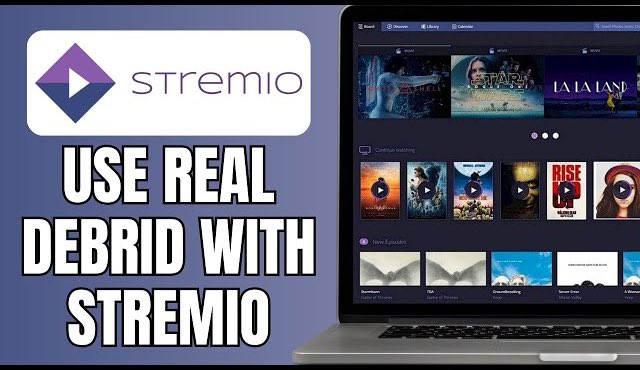
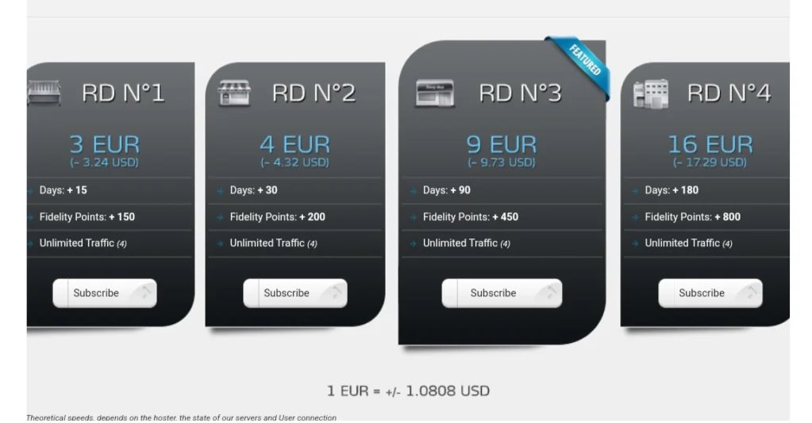
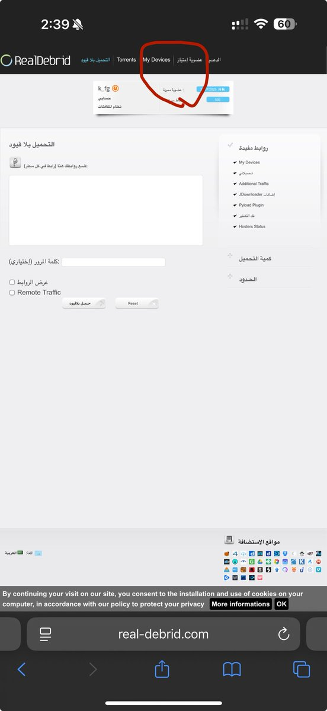
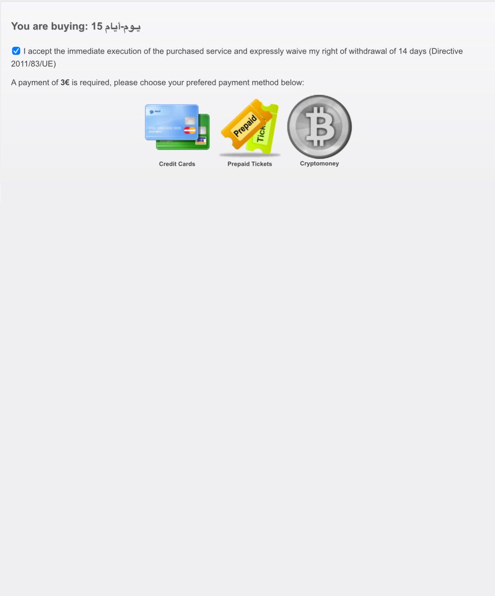
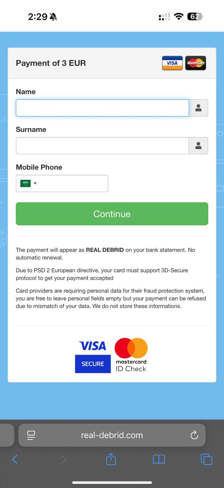
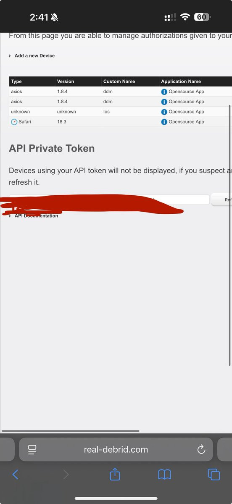
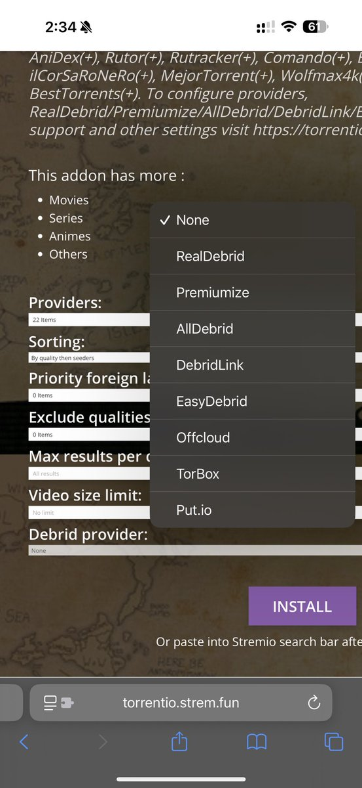
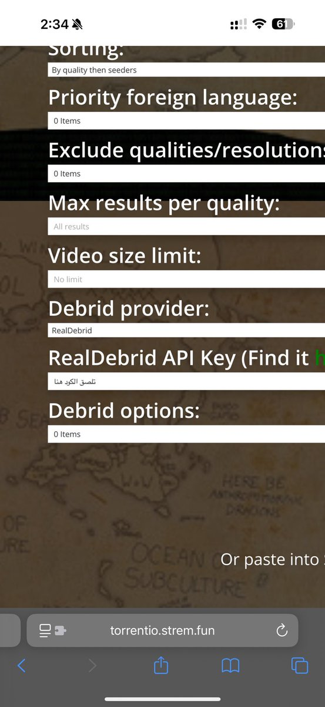
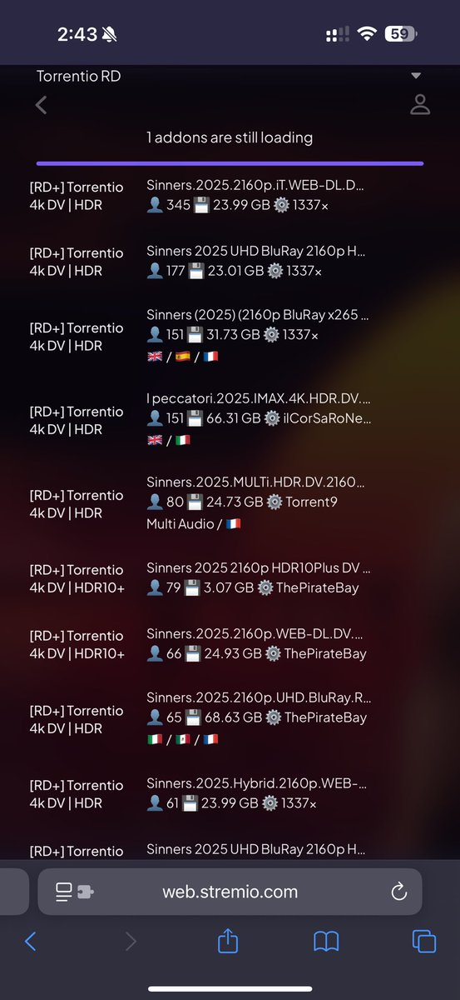

في هذا الشرح بنتكلم عن اشتراك Debrid وكيف تتابع على أعلى جودة بسيرفرك الخاص على Stremio.

خدمة تخليّك تحمل أو تشاهد ملفات من مواقع رفع مدفوعة، بسرعة عالية ومن غير قيود، كأنك مشترك فيها كلها وتتابع بسرعه عاليه حتى ولو كان النت عندك ماهو سريع ذيك السرعة.
تشترك عن طريق Real-Debrid من هذا الرابط:
الأسعار:

تروح إلى خيار "عضوية إمتياز" مثل ماهو واضح عندكم بعد ماتختارون الباقه تضغطون على "أشترك" وتضغطون على علامة الصح وبعدها Credit Card.
بعدها بتضيفون اسمكم ورقم جوالكم وبطاقتكم. (يمكن الدفع عن طريق بطاقات مدى أو فيزا مثل D3360 bank).



بعد ماتدفعون تتوجهون إلى صفحة My device وبيجيكم Api private Token.
بتنسخ الكود كامل بعدها تتجه إلى الأداة اللي بتربط فيها حسابك.

في الشرح بستخدم أضافة Torrentio:
مثل ما انتم شايفين هذي صفحة الأداة تروحون للكلمة الأخيرة Debrid provider بعدها Real-Debrid وتلصقون الكود.


والآن تقدرون تتابعون بأعلى سرعة وبأفضل تجربة ممكنة 🍿
